Mentors who have been through exactly what you're facing
We are all hirable. But what we lack is our ability to convey that. We are here to help international students explain it in a way that can impress the local hiring managers
Our mentors have worked at



Meet your mentors
Category Analyst · Class of '24
Fidel
Tap to read more
Category Analyst · Class of '24
Fidel
Came from Hong Kong as an international student with an accent, I can help you find a way to connect to the local hiring managers in unique ways that makes you desirable.
Book a sessionMarketing & Sales Graduate · Class of '24
Koko
Tap to read more
Marketing & Sales Graduate · Class of '24
Koko
To be a confident speaker in an interview, the first step is to understand qualities of yourself that makes you different. I will help you uncover what you can talk about beyond your degrees, societies and internship experiences.
Book a sessionFinance Officer · Class of '24
Deepika
Tap to read more
Finance Officer · Class of '24
Deepika
As a domestic student in Australia, I may have no visa restrictions. But what I can share is the perspective of a local hiring manager and what they look at when they see an international student.
Book a sessionTech Consultant · Class of '25
Angelica
Tap to read more
Tech Consultant · Class of '25
Angelica
As an international student from Indo, I broke into consulting amongst other domestic students. I would love to help you do the same if you are interested in tech & consulting!
Book a sessionDemand Planner · Class of '24
Aidan
Tap to read more
Demand Planner · Class of '24
Aidan
I landed my role through a networking event I went to. I would love to share how I found the event, what I said during the time and what led to an offer.
Book a sessionSoftware Engineer · Class of '24
Koda
Tap to read more
Software Engineer · Class of '24
Koda
As an introverted international student, I thought it was a major disadvantage. I can help you share what I did during my university and asked during the interview that made it possible.
Book a sessionFinancial Analyst · Class of '24
Raunaq
Tap to read more
Financial Analyst · Class of '24
Raunaq
I got my Financial Analyst role off a waitlist, through two screening rounds, a behavioural, and a technical. Finance hiring isn't just about knowing Excel and Power BI, it's about when to network and how to carry yourself in every room. I'll help you with both.
Book a sessionData Scientist · Class of '25
Wohee
Tap to read more
Data Scientist · Class of '25
Wohee
Most people focus only on the technical prep and forget that employers are hiring a person, not a skill set. I'll help you with both sides: the practical interview and resume work, and the confidence and emotional readiness that most mentors skip over.
Book a sessionFinance Graduate · Class of '25
Khaleel
Tap to read more
Finance Graduate · Class of '25
Khaleel
I've run career coaching workshops, mock assessment centres, and resume sessions through a career coaching company. I know what the process looks like from both sides.
Book a session